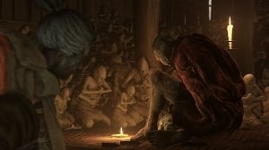

Sekiro
Sekiro
A shinobi who serves Kuro, the Divine Heir. He is highly skilled, with many combat arts and abilities at his disposal, and mastery of blocking, deflecting and attacking. Along with excellent vision and hearing, he is able to sneak around and perform effective Deathblows on Enemies. At the start of this story, he is defeated by Ashina’s commander, Genichiro, losing both the Divine Heir and his left arm, which is later replaced by the Shinobi Prosthetic. “The Lord is absolute, protect with your life” is the principle by which shinobi live. The law demands rescue, and vengeance.
Kuro, The Divine Heir
The only surviving descendant of an ancient clan. The Prince was raised in seclusion as a Shinobi, and adoptive son of Ashina’s minister Hirata. He appears calm and strong-willed beyond his years, with a dignified appearance and gentle demeanor. He was captured by the Ashina clan due to his unique ancestry.
Sculptor
 The Sculptor, or Busshi of Aredera as he is referred to by promotional material, is the exiled sculptor of the Dilapidated Temple. He is a taciturn, ill-mannered old man who spends his days living as a hermit inside a dilapidated temple located deep within the mountains near Ashina Castle. For reasons unknown, he chooses to assist Sekiro on his quest by fitting him with a Shinobi Prosthetic after the Wolf lost his arm. When not directly aiding Sekiro by offering to add new Tools of Upgrades to his arm, he spends most of his time carving warped, furious-looking statues of the Buddha.
Emma
A former student of the renowned physician Dogen, Emma is a healer that can be found at the Dilapidated Temple. She will assist Sekiro by improving his Healing Gourd in exchange for Gourd Seeds.
Owl
A master shinobi who adopted and mentored Sekiro after the war. His entire life revolves around upholding the Iron Code and protecting Kuro.
Isshin Ashina
The frail, aging lord of Ashina, who has been secreted away inside a guard tower within the castle for quite some time.
Divine Child of Rejuvenating Waters
One of several dozen children experimented on with the False Waters of Life.
Genichiro Ashina
A determined samurai who seeks to gain immortality through the Dragon Heritage.